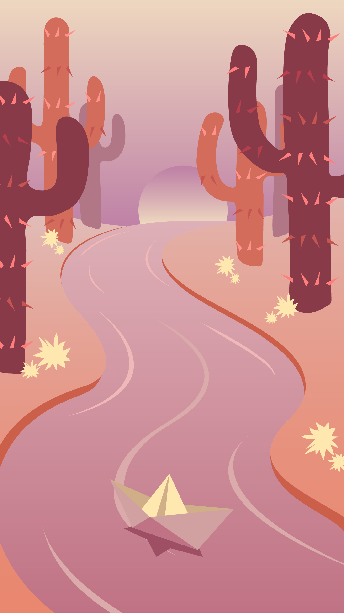
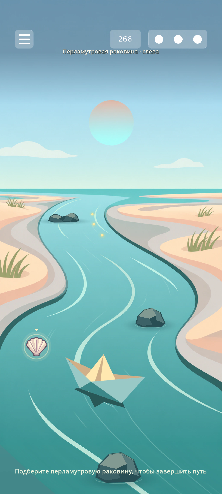

Update 0.38
Lantern River
Lanterns glow above the docks at dusk. A paper crane awaits on the tenth river.

a whispering path
towards the light
Whisper of the River is a meditative indie adventure. Set sail in a little paper boat, follow the current of an enchanted river, take in the scenery and gather light.

Which boat will set sail today? Gather lights, unlock new patterns and choose your paper boat before each journey.



Lanterns glow above the docks at dusk. A paper crane awaits on the tenth river.

The sea opens up beyond the sandbanks. Watch the water for the shimmer of a pearl shell.

Copper leaves reflect in turquoise water. Among the lights drifts a seed with two amber wings.
The Android version is in playtesting. Store links will appear here when the game launches.